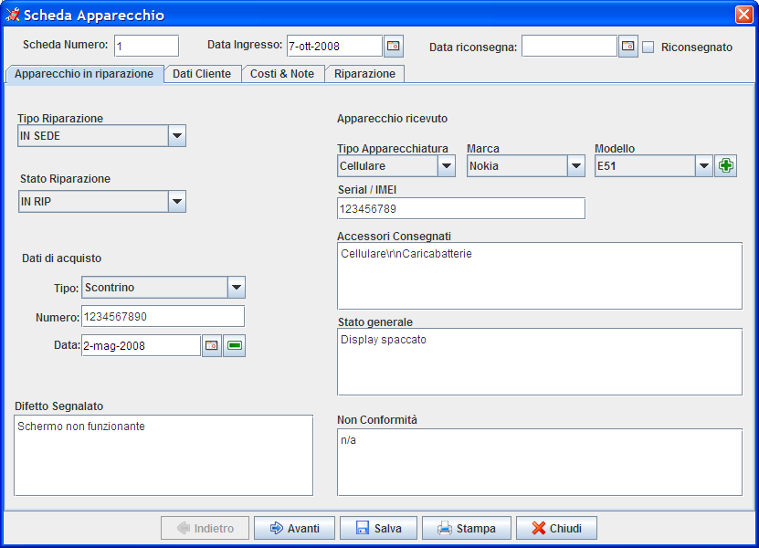

|
|
RepairsLab Manuale Utente |
Data Emissione: Pag |

|
|
RepairsLab Manuale Utente |
Data Emissione: Pag |
RepairsLab
Manuale Utente
Per RepairsLab 1.0
Autore: Fabrizio Ferraiuolo
Indice generale
Introduzione 2
Installazione 2
Schermata principale 3
Configurazione 4
Configurazioni Base Dati 5
Gestione Anagrafiche 6
Inserimento scheda di riparazione 7
Visualizzazione scheda di riparazione 10
Modifica scheda di riparazione 10
Stampa scheda di riparazione 11
Lista Schede 13
Cestino Schede Cancellate 14
Backup dei dati 14
Il seguente manuale è la base per la configurazione e l'utilizzo del sistema RepeairsLab.
Il sistema RepeairsLab permette di gestire l'ingresso e l'uscita degli apparecchi in riparazione per un piccolo laboratorio di riparazione o centro di assistenza.
L'applicazione permette la stampa di una “Scheda di riparazione” per ogni apparecchio e di gestire lo stato della riparazione. All'interno della scheda è possibile inserire le caratteristiche dell'apparecchio consegnato e lo stato della riparazione.
Il sistema offre la gestione di diverse anagrafiche per la definizione degli stati della riparazione, dei clienti, delle tipologie di apparecchio, dei marchi e dei modelli.
E' possibile la stampa di una versione cartacea della scheda di riparazione anche in duplice copia per l'archiviazione cartacea e come ricevuta di consegna per il cliente.
L'applicazione non ha bisogno di una particolare procedura, in quanto basta effettuare il download dell'applicazione dal seguente indirizzo
http://sourceforge.net/projects/repairslab/
e andare nella sezione download e scaricare la versione binary più recente.
Il file scaricato è un archivio, estrarlo e per avviare l'applicazione eseguire su sistemi MS Windows il file “start.bat” mentre su sistemi linux “start.sh”.
Prerequisito all'utilizzo del sistema è l'installazione di JAVA 1.5 o versione superiore come Java virtual machine predefinita.
Per verificare la propria versione di java aprire un prompt dei comandi o schell e eseguire il comando java -vession, come nella seguente immagine.

All'accesso al sistema viene visualizzata la seguente schermata con l'accesso dai menù alle anagrafiche alla configurazione del sistema e all'interno del menù principale sono presenti le seguenti funzioni:
Accesso alla lista Schede di riparazione
Inserimento nuova scheda di riparazione
Visualizzazione scheda di riparazione (il sistema richiede di inserire il numero della scheda da visualizzare)
Modifica scheda di riparazione (il sistema richiede di inserire il numero della scheda da modificare)
Stampa scheda di riparazione (il sistema richiede di inserire il numero della scheda da stampare)
Per le funzioni di cui ai punti 3, 4 e 5 viene prima di accedere alla specifica funzione viene visualizzata la seguente schermata, in cui è necessario inserire un valido numero di scheda di riparazione.
Alle opzioni di configurazione si accede dal menù strumenti alla voce opzioni, dove viene visualizzata la seguente schermata:
Lista delle configurazioni:
Logo: rappresenta il logo della propria azienda, per modificarlo è necessario premere il tasto seleziona e selezionare un file di tipo JPEG, GIF o PNG. Il logo viene visualizzato nella stampa della scheda di riparazione.
Informazioni per il cliente sulla scheda di manutenzione: sono informazioni aggiuntive visualizzate nella stampa della scheda di riparazione.
Info indirizzo e telefono scheda stampata: informazioni della propria azienda nella stampa della scheda di riparazione.
Non stampare in doppia copia: se viene abilitato tale check il sistema stampa una sola copia della scheda di riparazione.
Look and Feel: modifica l'aspetto grafico dell'applicazione, è necessario il riavvio dell'applicazione.
Dalla schermata delle configurazioni (punto precedente) su menù opzioni avanzate si accede alla seguente schermata:
E' possibile configurare il sistema in due modalità che sono le seguenti
Embedded Server
Standard Server
Il sistema è di default impostato su embedded, tale configurazione prevede l'utilizzo da parte di un solo utente, non è previsto accesso contemporaneo, la configurazione server invece prevede un utilizzo contemporaneo di più sessioni.
Per la configurazione della modalità standard server è necessario installare su un server il Software Database FirebirdSql e configurare il campo JDBC Url alla connessione con il file fdb presente all'interno della directory di installazione db\fdb\GESTRIP.FBD.
E' possibile utilizzare anche altri database quali Oracle o Mysql eseguendo lo script db\er\modelGestRip.sql e configurare opportunamente i parametri JDBC.
L'accesso alle anagrafiche avviene dal menù Gestione e le anagrafiche disponibili sono:
Anagrafica clienti: contiene la lista dei clienti.
Anagrafica stati: contiene i possibili stati della scheda di lavorazione.
Anagrafica Tipo Riparazione: contiene le tipologie di riparazione ovvero ad esempio se una riparazione avviene a carico del cliente o in garanzia oppure se avviene in sede o presso terzi.
Anagrafica Tipo Dati Acquisto: contiene le tipologie di dati di acquisto ovvero se tramite scontrino o fatura.
Anagrafica Tipo Oggetto: contiene le tipologie dell'apparecchio ovvero se è un cellulare piuttosto che un televisore.
Anagrafica Marchi: contiene la lista dei marchi.
Anagrafica Modelli: contiene la lista dei modelli.
La modalità di funzionamento delle anagrafiche prevede due stati, ovvero modalità visualizzazione e modalità modifica.
All'accesso si è in modalità visualizzazione per passare alla modalità modifica premere il tasto edit, in modalità modifica è possibile modificare i campi e aggiungere altre voci andando sull'ultima riga della tabella e cancellare dall'apposito tasto cancella. Per applicare le modifiche effettuate cliccare sul tasto salva per annullare l'apposito tasto annulla.
I tasti in basso servono per agevolare la navigazione tra i vari record.
La funzione di inserimento nuova scheda di riparazione è rappresentata dalla seguente schermata.
Tale schermata mostra una intestazione e quattro tab ognuna con differenti informazioni. La navigazione tra i tab può avvenire sia cliccando sul tab in alto che con i tasti di navigazione Indietro e Avanti in Basso.
L'intestazione presenta le seguenti informazioni:
Numero della scheda. Rappresenta un codice univoco progressivo che identifica la scheda di lavorazione.
La data di ingresso dell'apparecchio che viene automaticamente valorizzata con la data attuale ma può essere modificata nel caso in cui si stia per creare una scheda che identifica un apparecchio consegnato nei giorni precedenti.
La data di riconsegna. Indica la data di restituzione dell'apparecchio al cliente e quindi se valorizzato indica che la riparazione è archiviata. Per valorizzare tale campo è possibile semplicemente premere il check riconsegnato e il sistema inserisce automaticamente la data attuale. Tale data può essere anche inserita manualmente o con il calendario accessibile con l'apposito tasto.
Il Tab apparecchio ha le seguenti informazioni:
Tipo riparazione. Dall'anagrafica Tipo Riparazione.
Stato riparazione. Dall'anagrafica Stati.
Dati acquisto tipo. Dall'anagrafica Tipo Dati Acquisto.
Dati acquisto numero e data. Indicano il numero e la data del documento di acquisto
Tipo Apparecchiatura. Dall'anagrafica Tipo Oggetto.
Marca. Dall'anagrafica Marchi.
Modello. Dall'anagrafica Modelli. Il tasto a fianco permette l'inserimento di nuovi modelli senza accedere direttamente all'anagrafica. In inserimento se selezionati marca e/o tipo apparecchiatura i valori di questo campo sono filtrati per tali valori.
Campi descrittivi. I seguenti campi: Difetto Segnalato, Serial / IMEI, Accessori Consegnati, Stato generale e Non Conformità sono campi descrittivi per definire i dettagli delle informazioni della scheda di riparazione.
Il tab Dati cliente ha le informazioni definite all'interno dell'anagrafica clienti è infatti possibile, premendo il tasto “Seleziona Cliente” interrogare l'anagrafica e selezionare un cliente. Se le informazioni relative al cliente selezionato non sono complete o non risultano corrette è possibile premere il tasto “Modifica dati Cliente” e fare le opportune modifiche senza accedere direttamente all'anagrafica. Se è necessario inserire un nuovo cliente è possibile premere il tasto “Inserisci cliente” e la schermata permette l'inserimento di un nuovo cliente.
Per
confermare se modifiche e gli inserimenti fatti è necessario
premere il tasto ok altrimenti il sistema non registrerà tali
cambiamenti.
Il tab Costi & Note ha i seguenti campi:
Costo sostenuto. È un valore utilizzato per tenere traccia dei costi sostenuti per la riparazione, tale valore non viene stampato.
Costo preventivato. Inserito se viene fatto un preventivo di costo.
Costo addebitato al cliente. Tale valore serve a tenere traccia dei ricavi ottenuti.
Note per la stampa. Sono particolari note che vengono inserite all'interno della stampa.
Note per uso interno. Tale valore non viene stampato.
Il tab Riparazione ha un solo campo che si riferisce al dettaglio delle operazioni fatte nella riparazione.
Questa funzione permette di interrogare i dati presenti all'interno della scheda di riparazione senza poterli modificare.
Questa funzione permette di modificare i dati presenti all'interno della scheda di riparazione.

Questa funzione permette di stampare i dati contenuti all'interno della scheda di lavorazione.
I dati presenti sono i segurnti:
Nell'intestazione sono presenti il logo e i dati dell'azienda, nonché il numero della scheda e la data o ora di stampa
Nella sezione Cliente sono presenti il nome e cognome del cliente l'indirizzo la città e il telefono.
Nella sezione Apparecchio consegnato: la data di ingresso, la tipologia apparecchio, la marca e modello, le informazioni descrittive della scheda (serial/imei, accessori consegnati, stato generale, difetto segnalato), il tipo di riparazione, le informazioni relative il documento di acquisto, il preventivo di costo.
Nella sezione Riparazione sono presenti: la descrizione della riparazione, le note per la stampa, le non conformità, la data di riparazione, il costo di riparazione, le informazioni per il cliente sulla scheda di manutenzione.
La stampa avrà due sezioni una per il cliente una per uso interno a meno che non viene selezionato il check Non stampare in doppia copia.
Questa funzione visualizza la lista di tutte le schede di manutenzione emesse e permette la ricerca delle varie schede secondo alcuni criteri, da questa funzione, selezionata la scheda interessata è possibile accedere alle funzioni di visualizzazione scheda, modifica scheda, inserimento scheda, stampa scheda.
È inoltre presenta una funzione di eliminazione scheda che non cancella in modo definitivo i dati ma semplicemente li sposta in un cestino schede.
A questa funzione si accede dal menù Strumenti Cestino schede cancellate e mostra la lista di tutte le schede di manutenzione cancellare e permette la ricerca delle varie schede presenti secondo alcuni criteri.
Le funzioni presenti sono: la visualizzazione dei dettagli della scheda, il ripristino della scheda, l'eliminazione definitiva della scheda, l'eliminazione definitiva di tutto il cestino.
La funzione di backup deve essere fatta periodicamnete copiando manualmente la directory contenente i dati ovvero db\derby\gestrip.
È quindi consigliabile archiviare periodicamente l'archiviazione di tale directory.
Per il ripristino dei dati è semplicemente necessario il ripristino di tale directory.